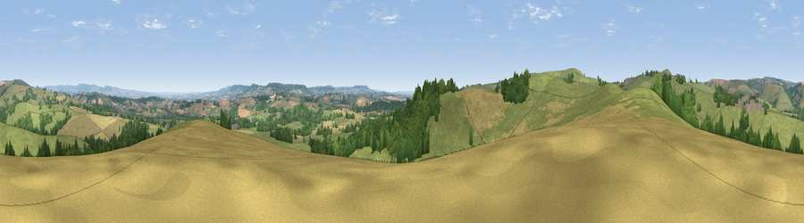

Viewpoint near Ashbrittle
#12949 in England · top 23% of its area beats it · near Ashbrittle · path 76 mWhere it is
The exact computed spot (ST 05725 20625). Click the marker for map links.
Public access: the nearest public right of way is about 76 m away — the final stretch may cross private land. Computed from Natural England's CRoW access layer and OpenStreetMap rights of way — not the legal definitive map. Always verify locally.
The view, rendered

A 360° render of this exact spot computed from the terrain model, tree cover and land cover — summer colours, afternoon light, calibrated against photographs of famous viewpoints. Real trees, hedges and buildings will differ in detail.
The panorama
Grey silhouette: terrain skyline in each direction (720 bearings, Earth curvature and refraction included). Dashed green: skyline with trees (+15 m) and buildings (+8 m) as obstacles. Blue strip: how far the ground is visible on each bearing.
Where the view opens
Wedge length = distance to the farthest visible ground on that bearing (vegetation-aware). Rings at 10, 25 and 50 km.
What fills the view
64% grassland · 18% cropland · 17% woodland ·
Angular shares of the visible panorama (visual magnitude), not map area. Landscape diversity 0.41 (0–1 Shannon).
Key numbers
More beautiful places nearby
The staircase of upgrades: each row has a higher view potential than everything closer. Driving times are estimates from straight-line distance, calibrated against real road routing — check an actual route before setting out.
| Place | Direction | Drive | Score |
|---|---|---|---|
| Viewpoint near Hockworthy | SW · 2 km | ~4 min | 61.0 |
| Viewpoint near Ashbrittle | WNW · 2 km | ~4 min | 62.7 |
| Heniton Hill | WNW · 2 km | ~6 min | 66.6 |
| Viewpoint near Wiveliscombe | N · 5 km | ~11 min | 75.1 |
| Viewpoint near Elworthy | N · 13 km | ~24 min | 75.6 |
| Viewpoint near Pitminster | ESE · 14 km | ~26 min | 77.3 |
| Viewpoint near Elworthy | N · 15 km | ~26 min | 79.2 |
| Viewpoint near Roadwater | NNW · 16 km | ~28 min | 82.9 |
50.97729, -3.34423 · source: screening · position refined by local search. Computed location — check access rights before visiting.